Saturday, October 10. Swipe to see each one.
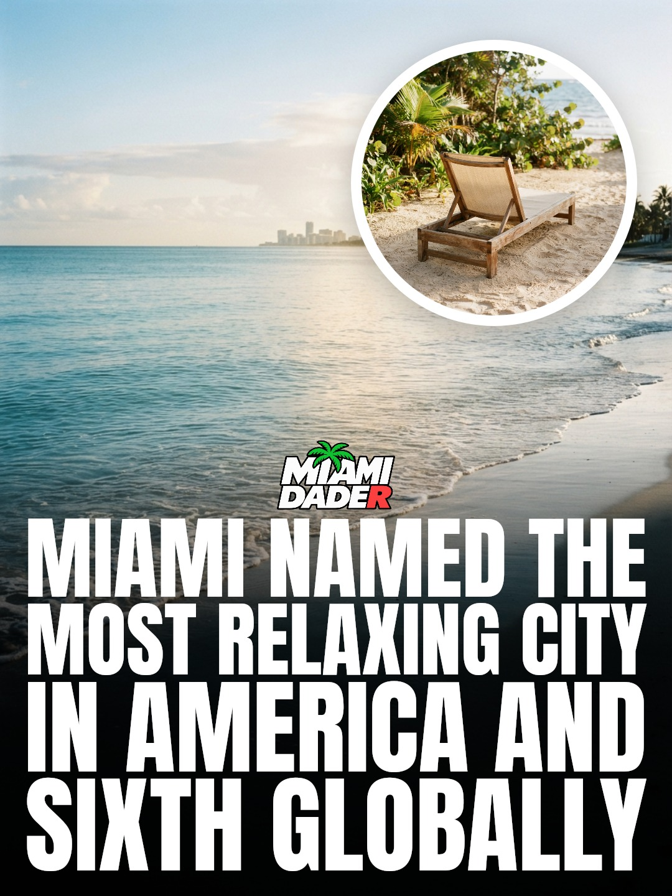
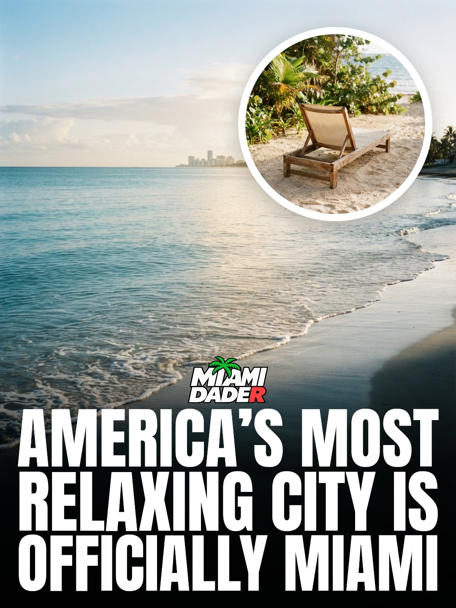
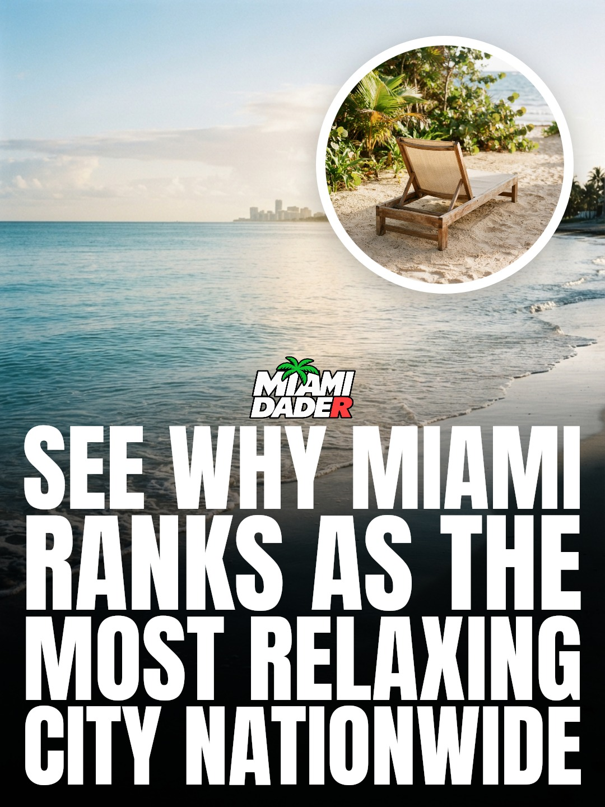
Miami has officially secured the top spot as the most relaxing city in America. In a recent worldwide evaluation, the Magic City also earned major recognition on the global stage, ranking as the sixth most relaxing city in the entire world. For residents across the Miami area, the result reinforces our community's place at the peak of national comfort. Earning first place across the United States places Miami ahead of every other domestic destination. Looking internationally, capturing the sixth position worldwide highlights Miami as a standout location across the globe.
Source: Time Out Worldwide. Check the facts before you post.
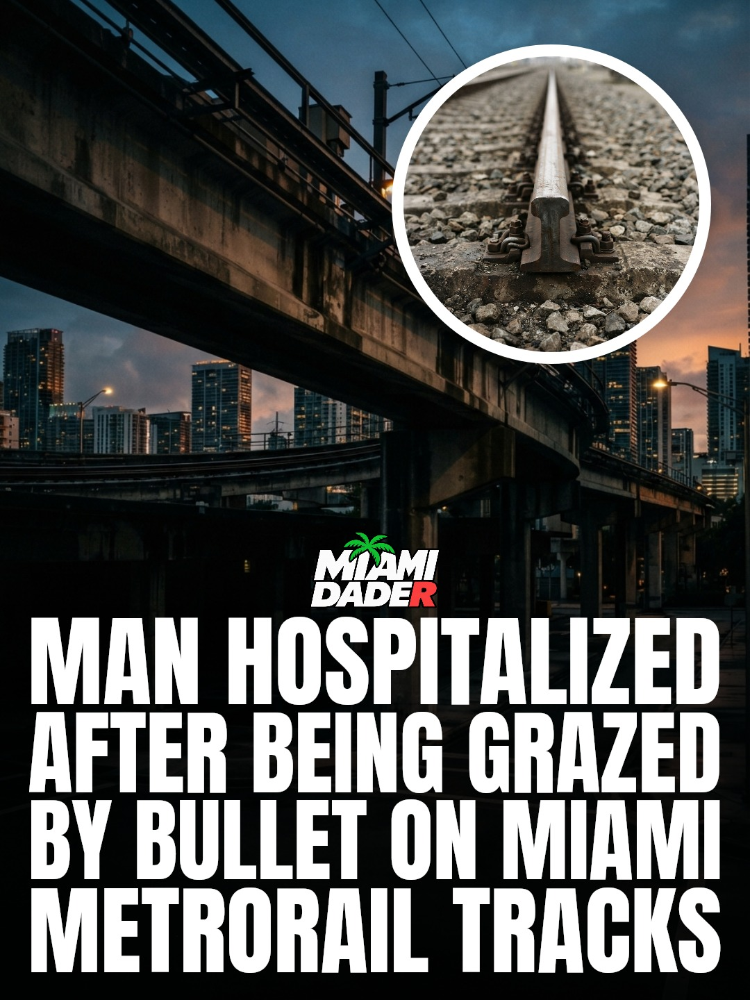
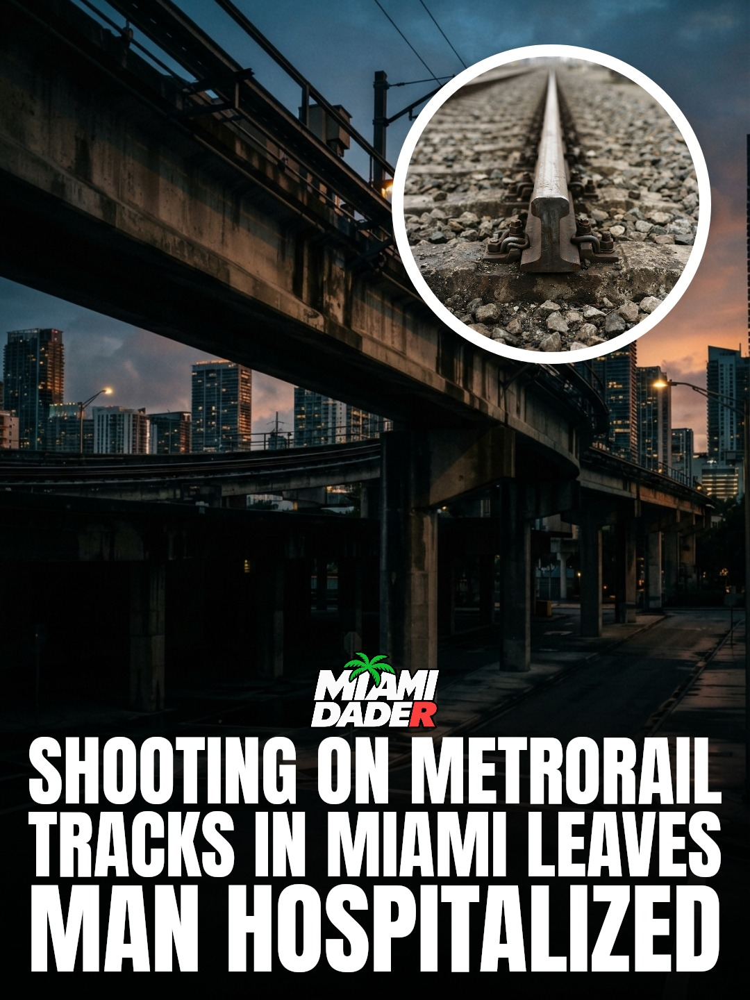
A man has been hospitalized after a shooting took place on the Metrorail tracks in Miami.
The incident occurred directly on the tracks in Miami, where the victim was grazed by a bullet during the gunfire.
Following the shooting on the Miami transit tracks, the injured man was taken to the hospital for care.
The gunfire in Miami left the man hospitalized after he sustained the bullet graze wound directly on the Metrorail tracks.
Source: WSVN. Check the facts before you post.
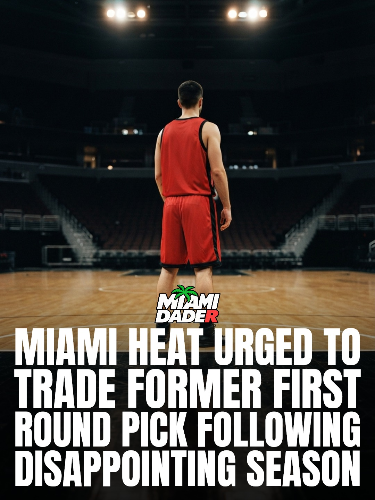
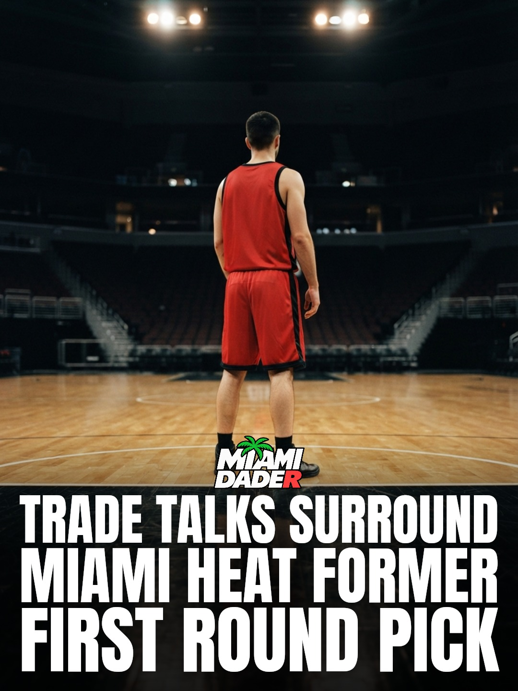
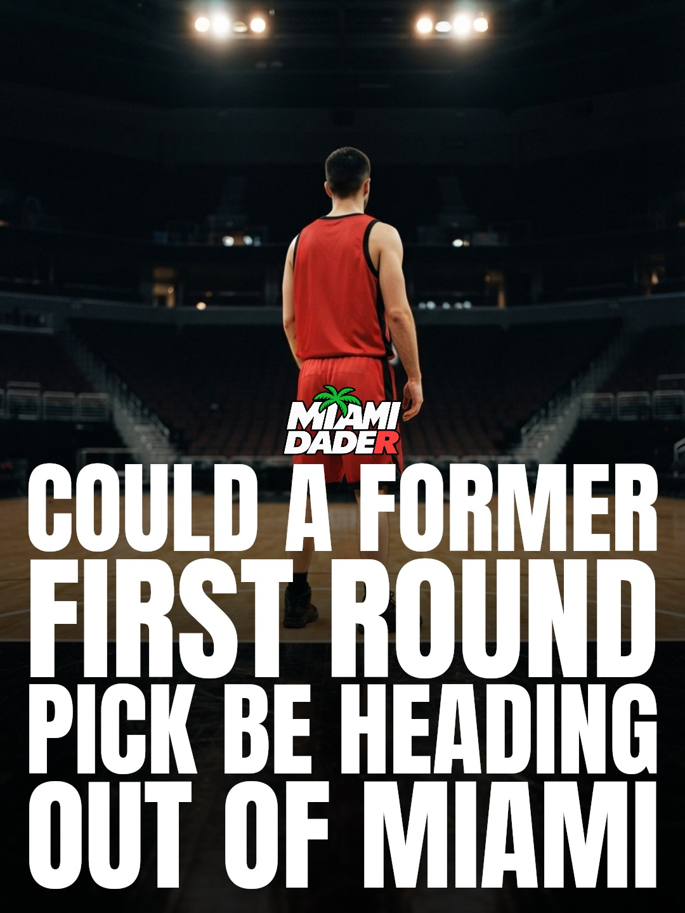
Pressure is mounting on the Miami Heat front office as discussions circulate regarding the direction of the roster. Following what has been characterized as a disappointing season, outside calls have emerged urging the organization to trade away a former first-round pick.
For basketball fans across South Florida, roster adjustments are always under intense scrutiny. Decisions involving former top selections carry significant weight for the future of the local franchise.
It remains to be seen how the team will handle the outside pressure or whether the front office will look into parting ways with the former first-round talent as the offseason unfolds.
Source: Heavy.com. Check the facts before you post.
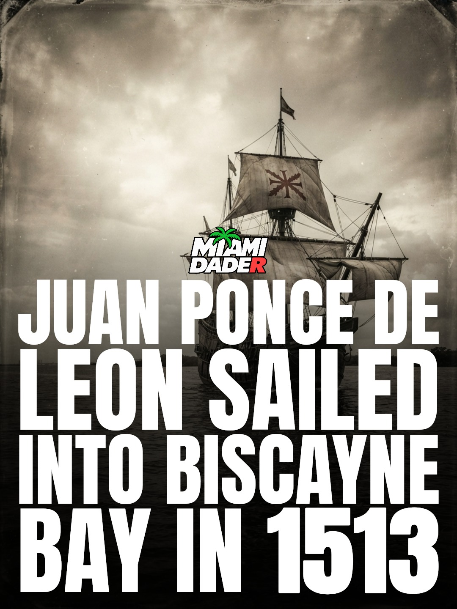
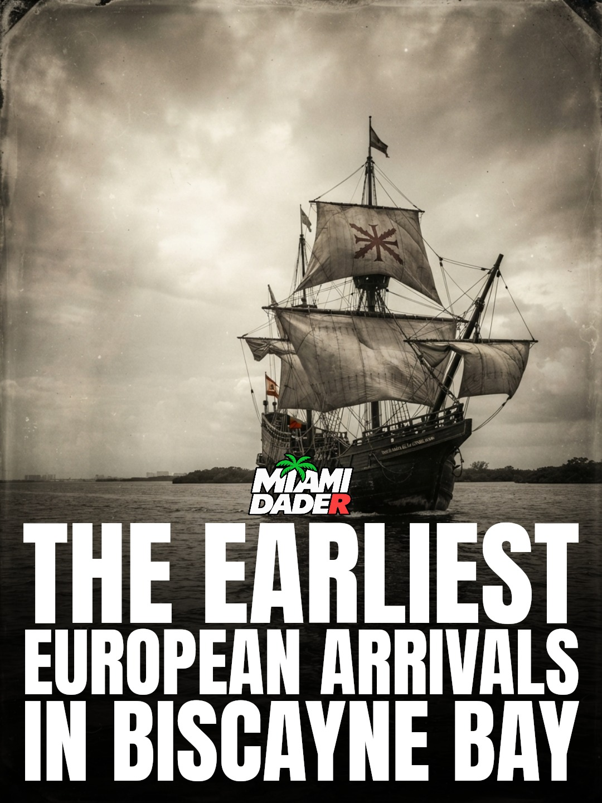
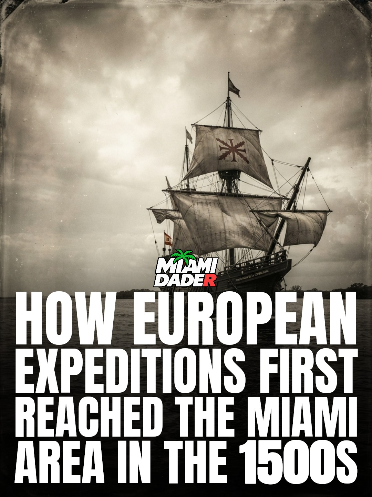
The recorded history of European arrival in the Miami area began in 1513. That year, Juan Ponce de Leon became the first European to visit the Miami area when he sailed into Biscayne Bay. Decades later, another documented expedition arrived in the area. In 1566, Pedro Menendez de Aviles made the first recorded European landing at a Tequesta settlement. Following that recorded landing, the Spanish set up a mission there in 1567, establishing an early European presence along our local shores.
From your fact library.